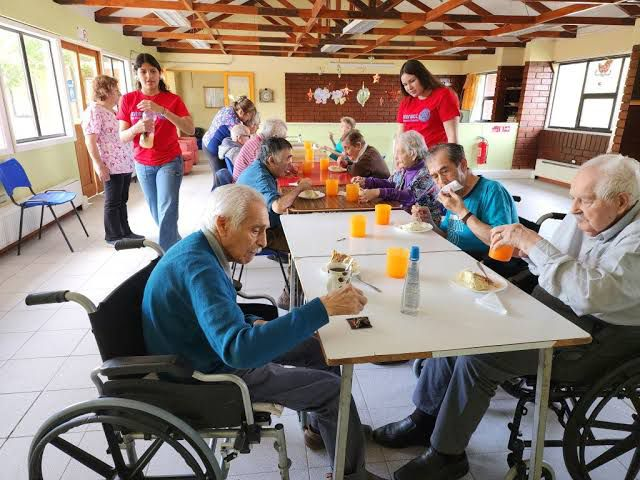

Responsables del proyecto:
-Gemmi Adlemi Morales Villegas
-J. Antonio Romo Marin
-David Emmanuel Andrade Torres
-Silvia Marquez Rodriguez
-Claudia Elizabeth Martinez Murillo
-Orlando Ramiro Esquivel Arellano
-Ana Celia Rodarte Duron
-Ma. Magdalena Valdivia Lopez
-Maria Patricia Arellano Flores
-Maria Soledad Salazar Vazquez
-Juana Ines Flores Lopez
-Luz Cecilia Sanchez Zamarripa
-Brenda Susana Lopez Gonzales
-Stephanie Diaz Ramirez

Objetivos:
Uno de los principales objetivos se plantean dese la nueva escuela mexicana es que las y los estudiantes logren integrarse a en su sociedad como un agente de cambio y
mejorar la misma.Esta meta requiere de un proceso paulatino en donde nuestros estudiantes ubiquen problematicas en su sociedad, las variables y necesidades que surgen
de esa problematica, tomen conciencia en como contribuyen(positiva o negativamente), y que pueden hacer para transformar su relacion con el mundo y su sociedad de forma positiva.
-Se pretende que los alumnos del plantel desarrollen conciencia social sobre el cuidado del adulto mayor de su comunidad.
-Se busca llevar a los alumnos a diferentes convivencias con adultos mayores de su comunidad.
-Se pretende que los alumnos desarrollen e identifiquen datos sobre la logistica de los insumos necesarios, costos y proveedores que necesitan los adultos
mayores en casas de asistencia.